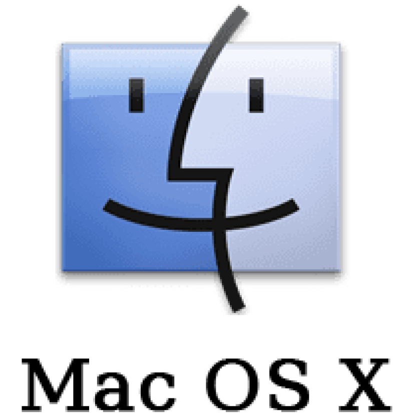

An operating system (OS) is a software that manages computer hardware and software resources and provides common services for computer programs.
Hardware functions such as I/O and memory allocation and the OS is in charge of acting as intermediary between the programs and the hardware. For instance, when a program needs
to read or write a file, it will make a request to the OS, which will then handle the actual reading or writing of the file on the disk. The OS also manages the CPU, memory, and
other resources of the computer, ensuring that each program gets the resources it needs to run efficiently. In addition, when a user runs multiple programs at the same time, the
OS is responsible for making sure one of those programs is not monopolizing the resources. They also tend to provide a user interface, such as a command line or graphical user
interface, to allow users to interact with the computer and run programs, a file explorer system, and various utilities. There are quite a lot of operating systems, but for desktop computers, the most common ones are
Microsoft Windows, macOS, and Linux.
Microsoft Windows

Microsoft Windows is a widely used operating system developed by Microsoft Corporation. It was first released in 1985 and has since become one of the most popular operating systems
in the world. Windows is known for its user-friendly interface, extensive software compatibility, and support for a wide range of hardware devices. It is commonly used in personal computers,
laptops, and servers. Windows offers various editions, including Windows 10 and Windows 11, each with different features and capabilities to cater to different user needs. Some reasons why Windows is popular
include its wide software support, ease of use, and regular updates that enhance security, functionality, and by far is the most optimal OS for PC gaming.
macOS

macOS is an operating system developed by Apple Inc. It is the primary operating system for Apple's Mac computers. macOS is known for its sleek design, intuitive user interface, and
seamless integration with other Apple products and services. It offers a range of features, including a powerful file management system, built-in applications for productivity and creativity,
and robust security measures. macOS is designed to provide a smooth and efficient user experience, making it popular among creative professionals, students, and general users alike. Some reasons why macOS is
so popular and beloved is its sleek design, intuitive user interface, seamless integration with other Apple products, and strong security features.
Linux

Linux is an open-source operating system that is based on the Unix operating system. It was first released in 1991 by Linus Torvalds and has since become one of the most widely used operating
systems in the world. Linux is known for its stability, security, and flexibility. It is commonly used in servers, supercomputers, and embedded systems, as well as in personal computers and laptops.
Linux offers a wide range of distributions (distros) that cater to different user needs and preferences, such as Ubuntu, Fedora, and Debian. The open-source nature of Linux allows users to customize
and modify the operating system to suit their specific requirements. A few of the most popular distributions include Ubuntu, Fedora, Debian, Arch, CentOS, Mint, and even Android (yet Android is primarily
use in cellphone devices, tablets, and some TVs).